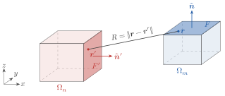
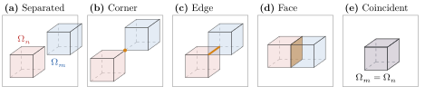

4 Evaluating the Green Function's Matrix Elements
We have yet to discuss what $\bm{G}_{\circ}$ actually is. In this section, we will briefly derive an expression for the Green function in free space, and then give a high level overview of how to evaluate its matrix elements. A slightly more in depth (but not quite complete) explanation of how Gila evaluates the Green function matrix elements is given in section 4.3.
4.1 Derivation of the Electric Dyadic Vacuum Green Function
Let's work with the electric part of the vacuum Green function, though a similar derivation can be done for the magnetic part and the off-diagonals. Recall Maxwell's equations in matrix form, eq. (1.2):
\[\begin{align*} \begin{bmatrix} ik_{\circ}^{-1}\vb*{j}_e\ab(\vb*{r}) \\ Z_{\circ}\varepsilon_{\circ}ik_{\circ}^{-1}\vb*{j}_m\ab(\vb*{r}) \end{bmatrix} & = - Z_{\circ}^{-1} \begin{bmatrix} \bbone & -ik_{\circ}^{-1}\vb*{\nabla}\times \\ ik_{\circ}^{-1}\vb*{\nabla}\times & \bbone \end{bmatrix}\begin{bmatrix} \vb*{e}\ab(\vb*{r}) \\ Z_{\circ}\vb*{h}\ab(\vb*{r}) \end{bmatrix} \end{align*}\]
For the electric part, we set $\vb*{j}_m\ab(\vb*{r}) = 0$ to get two equations (note that we will now drop the explicit dependence on $\vb*{r}$ for brevity):
\[\begin{align*} \frac{i}{k_{\circ}}\vb*{j}_e &= - Z_{\circ}^{-1}\vb*{e} + \frac{i}{k_{\circ}}\vb*{\nabla}\times \vb*{h}\tag{4.1} \\ - Z_{\circ}^{-1}\vb*{\nabla}\times \vb*{e} &= \frac{k_{\circ}}{i} \vb*{h}\tag{4.2} \end{align*}\]
Taking the curl of the first equation and substituting in the second equation, we find (after a quick simplification):
\[\begin{align*} \vb*{\nabla}\times \vb*{j}_e &= \vb*{\nabla}\times\vb*{\nabla}\times \vb*{h} - k_{\circ}^2\vb*{h} = \ab(\vb*{\nabla}\times \vb*{\nabla}\times -k_{\circ}^2)\vb*{h}\tag{4.3} \end{align*}\]
Taking the divergence of eq. (4.2), we have that:
\[\begin{align*} \vb*{\nabla}\cdot \vb*{h} &= -\frac{i}{k_{\circ}}Z_{\circ}^{-1} \vb*{\nabla}\cdot \ab(\vb*{\nabla}\times \vb*{e}) = \vb*{0} \end{align*}\]
as the divergence of a curl is always zero. Now we use the vector identity $\vb*{\nabla}\times \vb*{\nabla}\times \vb*{\psi} = \vb*{\nabla}\ab(\vb*{\nabla}\cdot \vb*{\psi}) - \nabla^2 \vb*{\psi}$ on $\vb*{h}$ to get $\vb*{\nabla}\times \vb*{\nabla}\times \vb*{h} = -\nabla^2\vb*{h}$. Substituting this into eq. (4.3), we have:
\[\begin{align*} \vb*{\nabla}\times \vb*{j}_e &= -\ab(\nabla^2 + k_{\circ}^2)\vb*{h}\tag{4.4} \end{align*}\]
Notice that the above equation is satisfied independently for each component of $\vb*{h}$, i.e., eq. (4.4) is three of the same scalar equation. We can use this to solve the scalar version of the equation and the vector equation will automatically be satisfied.
Suppose we had a function $g_{\circ}\ab(\vb*{s})$ that satisfied $-\ab(\nabla^2 + k_{\circ}^2)g_{\circ}\ab(\vb*{s}) = \delta\ab(\vb*{s})$. Then we have:
\[\begin{align*} \int_{\mathbb{R}^3} \dd[3]{\vb*{r}^\prime} g_{\circ}\ab(\vb*{r} - \vb*{r}^\prime) \ab[\vb*{\nabla}^\prime\times \vb*{j}_e]\ab(\vb*{r}^\prime) &= \int_{\mathbb{R}^3} \dd[3]{\vb*{r}^\prime} \underbrace{g_{\circ}\ab(\vb*{r} - \vb*{r}^\prime) \ab(-\ab(\nabla^{\prime2} + k_{\circ}^2))}_{\delta\ab(\vb*{r} - \vb*{r}^\prime)}\vb*{h}\ab(\vb*{r}^\prime) \\ &= \vb*{h}\ab(\vb*{r}) \end{align*}\]
This type of function, $g_{\circ}$, is called a (scalar) Green function, and we can think of it simultaneously as the inverse of a differential operator (the inverse of the operator in eq. (4.4), in this case), and as the solution of the differential equation under a point source (or a unit impulse). It is a very powerful tool in solving differential equations. One of the tricky bits, is finding an actual expression for $g_{\circ}$. Note that $e^{\pm ik_{\circ} R} / \ab(4\pi R)$ (with $R = \abs{\vb*{r} - \vb*{r}^\prime}$) is a solution to the equation $-\ab(\nabla^2 + k_{\circ}^2)g_{\circ}\ab(\vb*{s}) = \delta\ab(\vb*{s})$:
For $R > 0$:
\[\begin{align*} \nabla^2\frac{e^{\pm ik_{\circ} R}}{4\pi R} &= \frac{1}{4\pi}\nabla^2\ab(\frac{e^{\pm ik_{\circ} R}}{R}) \\ &= \frac{1}{4\pi R^2} \pdv{}{R}\ab(R^2 \pdv{}{R}\ab(\frac{e^{\pm ik_{\circ} R}}{R})) \\ &= -k_{\circ}^2 \frac{e^{\pm ik_{\circ} R}}{4\pi R} \end{align*}\]
For $R = 0$:
\[\begin{align*} \lim_{R \to 0}\nabla^2\frac{e^{\pm ik_{\circ} R}}{4\pi R} &= \lim_{R \to 0}\frac{1}{4\pi}\nabla^2\bigg(\frac{1}{R} \pm ik_{\circ}R \\ &\qquad \mp \frac{1}{2}k_{\circ}^2 R^3 \pm \order{R^5}\bigg) \\ &= \frac{1}{4\pi}\lim_{R \to 0}\big(-4\pi\delta\ab(\vb*{r} - \vb*{r}^\prime) \\ &\qquad + 0 \mp \frac{1}{2}k_{\circ}^2 \frac{2}{R} \pm \ldots\big) \\ &= -\delta\ab(\vb*{r} - \vb*{r}^\prime) - k_{\circ}^2 \frac{e^{\pm ik_{\circ} R}}{4\pi R} \end{align*}\]
We choose to take the $+$ branch of $g_{\circ}$, as physically this corresponds to allowing waves to exit to domain to infinity[9] (taking the $-$ branch would mean letting waves from infinity enter our domain), corresponding to open (radiating) boundary conditions.
Note that in Gila we allow for a complex frequency factor, $\zeta \in \mathbb{C}$, defined by $\omega = \zeta c k_{\circ}$. All the integrals discussed in section 4.3 numerically converge for any $\zeta$ with $\Im(\zeta) \ge 0$. You can set $\zeta$ by passing a complex number to the frqPhz keyword of the operator constructors (e.g., GlaOprVac).
Notice that since $\vb*{g}_{\circ}$ is scalar, it depends only on the norm of its argument, which is symmetric under exchange of $\vb*{r}$ and $\vb*{r}^\prime$, that is: $g_{\circ}\ab(\norm{\vb*{r} - \vb*{r}^\prime}) = g_{\circ}\ab(\norm{\vb*{r}^\prime - \vb*{r}}) \coloneq g_{\circ}\ab(R)$. Thus, the following holds (using $\vb*{r}^{\dprime} = \vb*{r} - \vb*{r}^\prime$ and $r_i$ as a component of $\vb*{r}$):
\[\begin{align*} \pdv{}{r_i}\int_{\mathbb{R}^3} \dd[3]{\vb*{r}^\prime} g_{\circ}\ab(\norm{\vb*{r} - \vb*{r}^\prime}) f\ab(\vb*{r}^\prime) &= \int_{\mathbb{R}^3} \dd[3]{\vb*{r}^\prime} \pdv{}{r_i}\ab[g_{\circ}\ab(\norm{\vb*{r} - \vb*{r}^\prime}) f\ab(\vb*{r}^\prime)] \\ &= \int_{\mathbb{R}^3} \dd[3]{\vb*{r}^{\dprime}} \pdv{}{r_i}\ab[g_{\circ}\ab(\norm{\vb*{r}^{\dprime}}) f\ab(\vb*{r} - \vb*{r}^{\dprime})] \\ &= \int_{\mathbb{R}^3} \dd[3]{\vb*{r}^{\dprime}} g_{\circ}\ab(\norm{\vb*{r}^{\dprime}}) \pdv{}{r_i}f\ab(\vb*{r} - \vb*{r}^{\dprime}) \\ &= \int_{\mathbb{R}^3} \dd[3]{\vb*{r}^\prime} g_{\circ}\ab(\norm{\vb*{r} - \vb*{r}^\prime}) \pdv{}{r^\prime_i}f\ab(\vb*{r}^\prime) \end{align*}\]
Then, starting from our Green function solution for $\vb*{h}$ above and using the derivation above to commute the curl operator with the scalar Green function, we get:
\[\begin{align*} \vb*{h}\ab(\vb*{r}) &= \vb*{\nabla}\times \int_{\mathbb{R}^3} \dd[3]{\vb*{r}^\prime}g_{\circ}\ab(\norm{\vb*{r} - \vb*{r}^\prime}) \vb*{j}_e\ab(\vb*{r}^\prime) \end{align*}\]
Since we are using pulse basis functions over a finite domain (because ultimately we can only store finitely many voxels in our computer's memory), we can restrict the domain of integration to a finite volume $\Omega\subset \mathbb{R}^3$ over which the currents have compact support. Now, we substitute this into eq. (4.1) to get:
\[\begin{align*} \frac{i}{k_{\circ}}\vb*{j}_e\ab(\vb*{r}) &= - Z_{\circ}^{-1}\vb*{e}\ab(\vb*{r}) + \frac{i}{k_{\circ}}\vb*{\nabla}\times \vb*{\nabla}\times \int_{\Omega} \dd[3]{\vb*{r}^\prime}g_{\circ}\ab(\norm{\vb*{r} - \vb*{r}^\prime}) \vb*{j}_e\ab(\vb*{r}^\prime) \end{align*}\]
Recalling our definition of $\vb*{p}$ and $\vb*{f}$ in eq. (1.2) this is:
\[\begin{align*} \vb*{p}_e\ab(\vb*{r}) &=-Z_{\circ}^{-1}\vb*{f}_e\ab(\vb*{r}) + \vb*{\nabla}\times \vb*{\nabla}\times \int_{\Omega} \dd[3]{\vb*{r}^\prime}g_{\circ}\ab(\norm{\vb*{r} - \vb*{r}^\prime}) \vb*{p}_e\ab(\vb*{r}^\prime) \\ \implies \vb*{f}_e\ab(\vb*{r}) &= Z_{\circ}\ab(-\bbone + \vb*{\nabla}\times \vb*{\nabla}\times \int_{\Omega} \dd[3]{\vb*{r}^\prime}g_{\circ}\ab(\norm{\vb*{r} - \vb*{r}^\prime}) \bm{\bbone})\vb*{p}_e\ab(\vb*{r}) \end{align*}\]
Just as we defined $g_{\circ}$ as an operator that inverted the (scalar) Helmholtz equation, eq. (4.4), we can define a dyadic Green function operator, $\bm{G}_{\circ}$, that inverts Maxwell's equations above. Specifically, we define $\bm{G}^{ee}_{\circ}$ as the (electric part[10] of the) linear operator satisfying:
\[\begin{align*} \bbone &= Z_{\circ}\ab(-\bbone + \vb*{\nabla}\times \vb*{\nabla}\times \int_{\Omega} \dd[3]{\vb*{r}^\prime}g_{\circ}\ab(\norm{\vb*{r} - \vb*{r}^\prime})\bbone)\bm{G}^{ee}_{\circ} \end{align*}\]
so that we may write $\vb*{f}_e\ab(\vb*{r}) = \bm{G}^{ee}_{\circ}\vb*{p}_e\ab(\vb*{r})$. In Gila, we only worry about the electric part, so we will drop the $ee$ superscript and just write:
\[\begin{align*} \bm{G}_{\circ} &= Z_{\circ}\ab(-\bbone + \vb*{\nabla}\times \vb*{\nabla}\times g_{\circ}\bbone)\tag{4.5} \end{align*}\]
where integration over $\Omega$ is implied in the $\vb*{\nabla}\times \vb*{\nabla}\times g_{\circ}$ term. In kernel form, this is:
\[\begin{align*} \bm{\mathcal{G}}_{\circ}\ab(\vb*{r}, \vb*{r}^\prime) &= Z_{\circ}\ab(-\bbone\delta\ab(\vb*{r} - \vb*{r}^\prime) + \vb*{\nabla}\times \vb*{\nabla}\times g_{\circ}\ab(\norm{\vb*{r} - \vb*{r}^\prime})\bbone)\tag{4.6} \end{align*}\]
4.2 Kernel Matrix Elements
Substituting eq. (4.6) into our definition of the discretized Green function matrix elements, eq. (3.2), we have:
\[\begin{align*} \ab[\mathsf{G}_{\circ}]_{m\alpha, n\beta} &= \frac{1}{\Delta V_m}\int_{\Omega_m} \dd[3]{\vb*{r}} \int_{\Omega_n} \dd[3]{\vb*{r}^\prime} \braket<{\phi_{m\alpha}}|{\bm{\mathcal{G}}_{\circ}\ab(\vb*{r}, \vb*{r}^\prime)}|{\phi_{n\beta}}> \\ &= \frac{Z_{\circ}}{\Delta V_m}\int_{\Omega_m} \dd[3]{\vb*{r}} \int_{\Omega_n} \dd[3]{\vb*{r}^\prime} \ab(-\braket<{\phi_{m\alpha}}|{\bbone\delta\ab(\vb*{r} - \vb*{r}^\prime)}|{\phi_{n\beta}}> + \braket<{\phi_{m\alpha}}|{\vb*{\nabla}\times \vb*{\nabla}\times g_{\circ}\ab(\norm{\vb*{r} - \vb*{r}^\prime})\bbone}|{\phi_{n\beta}}>) \end{align*}\]
where $\Omega_m$ and $\Omega_n$ are the volumes defining voxels $m$ and $n$.
In Gila, we require that the voxels are axis-aligned, i.e., that the edges of the voxels are parallel to the axes of the coordinate system. You can create axis-aligned volumes with the GlaVol type. We do not require that the voxels are cubes (i.e., the edges may have arbitrary lengths). We also do not require that the voxels in $\Omega_m$ and $\Omega_n$ are the same size, though they may be (unless you are working with the $\bm{\mathsf{W}}$ operator, SctOpr, or any other operator that requires the source volume $\Omega_n$ and target volumes $\Omega_m$ to be the same).
Assuming $\Omega_m$ and $\Omega_n$ are axis-aligned boxes with volumes $\Delta V_i = \ell^i_x\ell^i_y\ell^i_z$ (where $\ell^i_x$ is the length of box $i$ along the $x$ axis in wavelength-scaled units, etc.) and outward-pointing face normals $\hat{\vb*{n}}_\alpha = \pm\hat{\vb*{e}}_\alpha$ for $i \in \left\{m, n\right\}$ and $\alpha \in \left\{x, y, z\right\}$, we can write the integrals as:
\[\begin{align*} \ab[\mathsf{G}_{\circ}]_{m\alpha, n\beta} &= Z_{\circ}\ab(-\delta_{m, n}\delta_{\alpha, \beta} + \frac{1}{\Delta V_m} \underbrace{\int_{\Omega_m} \dd[3]{\vb*{r}} \hat{\vb*{e}}_\alpha \cdot \ab[\vb*{\nabla}\times \vb*{\nabla}\times \ab(\hat{\vb*{e}}_\beta\int_{\Omega_n} \dd[3]{\vb*{r}^\prime} g_{\circ}\ab(\norm{\vb*{r} - \vb*{r}^\prime}))]}_{\ab[\bm{\mathsf{T}}]_{m\alpha, n\beta}}) \end{align*}\]
Using $\vb*{\nabla}\times \ab(\phi \hat{\vb*{e}}_\beta) = \vb*{\nabla}\phi\times \hat{\vb*{e}}_\beta$ for the inner curl and trading $\vb*{\nabla}$ for $-\vb*{\nabla}^\prime$ (since $g_{\circ}$ depends only on the difference $\vb*{r} - \vb*{r}^\prime$, not the individual vectors), we have:
\[\begin{align*} \ab[\bm{\mathsf{T}}]_{m\alpha, n\beta} &= -\int_{\Omega_m} \dd[3]{\vb*{r}} \hat{\vb*{e}}_\alpha \cdot \ab[\vb*{\nabla}\times \ab(\int_{\Omega_n} \dd[3]{\vb*{r}^\prime} \vb*{\nabla}^\prime g_{\circ}\ab(\norm{\vb*{r} - \vb*{r}^\prime}))\times \hat{\vb*{e}}_\beta] \end{align*}\]
By Stokes' theorem, the inner 3D integral becomes a 2D surface integral over the boundary of $\Omega_n$:
\[\begin{align*} \ab[\bm{\mathsf{T}}]_{m\alpha, n\beta} &= -\int_{\Omega_m} \dd[3]{\vb*{r}} \hat{\vb*{e}}_\alpha \cdot \ab[\vb*{\nabla}\times \ab(\oint_{\partial\Omega_n} \dd{S^\prime} \ab(\hat{\vb*{n}}^\prime\times \hat{\vb*{e}}_\beta) g_{\circ}\ab(\norm{\vb*{r} - \vb*{r}^\prime}))] \end{align*}\]
Using $\hat{\vb*{e}}_\alpha\cdot \ab(\vb*{\nabla}\times \vb*{\psi}) = \vb*{\nabla}\cdot \ab(\vb*{\psi}\times \hat{\vb*{e}}_\alpha)$ for the outer curl, we have:
\[\begin{align*} \ab[\bm{\mathsf{T}}]_{m\alpha, n\beta} &= -\int_{\Omega_m} \dd[3]{\vb*{r}} \vb*{\nabla}\cdot \ab(\ab(\oint_{\partial\Omega_n} \dd{S^\prime} g_{\circ}\ab(\norm{\vb*{r} - \vb*{r}^\prime}) \ab(\hat{\vb*{n}}^\prime\times \hat{\vb*{e}}_\beta))\times \hat{\vb*{e}}_\alpha) \end{align*}\]
Again, by Stokes' theorem, the outer 3D integral becomes a 2D surface integral over the boundary of $\Omega_m$:
\[\begin{align*} \ab[\bm{\mathsf{T}}]_{m\alpha, n\beta} &= -\oint_{\partial\Omega_m} \dd{S} \hat{\vb*{n}} \cdot \ab(\ab(\oint_{\partial\Omega_n} \dd{S^\prime} g_{\circ}\ab(\norm{\vb*{r} - \vb*{r^\prime}}) \ab(\hat{\vb*{n}}^\prime\times \hat{\vb*{e}}_\beta))\times \hat{\vb*{e}}_\alpha) \\ &= \oint_{\partial\Omega_m} \dd{S} \oint_{\partial\Omega_n} \dd{S^\prime} \ab(\vb*{n}\times \hat{\vb*{e}}_\alpha)\cdot\ab(\vb*{n}^\prime\times \hat{\vb*{e}}_\beta) g_{\circ}\ab(\norm{\vb*{r} - \vb*{r^\prime}}) \end{align*}\]
Since our volumes are cuboids, the surface normals can be written as $\hat{\vb*{n}} = \sigma \hat{\vb*{e}}_\gamma$ with $\sigma \in \left\{-1, 1\right\}$ and are constant along each face. Thus, the dot product is simply:
\[\begin{align*} \ab(\vb*{n}\times \hat{\vb*{e}}_\alpha)\cdot\ab(\vb*{n}^\prime\times \hat{\vb*{e}}_\beta) &= \sum_{\gamma \in \left\{x, y, z\right\}} \sum_{\sigma \in \pm 1} \sum_{\gamma^\prime \in \left\{x, y, z\right\}} \sum_{\sigma^\prime \in \pm 1} \sigma\sigma^\prime\ab(\delta_{\gamma\gamma^\prime}\delta_{\alpha\beta} - \delta_{\gamma\beta}\delta_{\gamma^\prime\alpha}) \\ &\eqcolon c_F^{F^\prime} \in \left\{-1, 0, 1\right\} \end{align*}\]
which is just a constant that depends only on which faces $F \in \partial \Omega_m$ and $F^\prime \in \partial \Omega_n$ we are integrating over (see fig. 4.1).

Figure 4.1: The two voxels entering one matrix element $\ab[\mathsf{G}_{\circ}]_{m\alpha, n\beta}$. The source voxel $\Omega_n$ (red) and the target voxel $\Omega_m$ (blue). One face of each, $F' \in \partial\Omega_n$ and $F \in \partial\Omega_m$, is highlighted with its outward normal shown. Each face pair contributes $c_F^{F'} \int_F \int_{F'} g_\circ(R) \dd{S'} \dd{S}$, with $R = \norm{\vb*{r} - \vb*{r}'}$ the distance between a point on each face.
Thus, the matrix elements of the vacuum Green function can be computed by evaluating 36 4D surface integrals:
\[\begin{align*} \ab[\mathsf{G}_{\circ}]_{m\alpha, n\beta} &= Z_{\circ}\ab(-\delta_{m, n}\delta_{\alpha, \beta} + \frac{1}{\Delta V_m} \sum_{F \in \partial \Omega_m} \sum_{F^\prime \in \partial\Omega_n} c_F^{F^\prime} \int_{F} \dd{S} \int_{F^\prime} \dd{S^\prime} \frac{e^{ik_{\circ} R}}{4\pi R})\tag{4.7} \end{align*}\]
The matrix elements that Gila computes and stores are normalized by $Z_{\circ}$, i.e., Gila computes $\ab[\mathsf{G}_{\circ}]_{m\alpha, n\beta} / Z_{\circ}$. Thus, for a material tensor $\mathsf{X}$ to have the right units, one must forgo the $Z_{\circ}^{-1}$ in eq. (1.3) and supply only the susceptibility $\chi$ (which is dimensionless). In other words, the material tensor's matrix elements should be $\ab[\mathsf{X}]_{m\alpha, n\beta} = \chi\ab(\vb*{r}_m)\delta_{mn}$. Gila also scales them by $1/\zeta^2$, with $\zeta$ the complex frequency factor of convention 4.1.
4.3 Evaluating the Surface Integrals
The surface integrals in eq. (4.7) are well-defined and computable as the $\frac{1}{R}$ kernel on a $2$D$\times 2$D surface integral is absolutely integrable[11], so any convergent quadrature will work (in principle). The problematic cases are faces that are adjacent, touching, or coincident (i.e., all the cases where $\Omega_m = \Omega_n$ or $\Omega_m$ and $\Omega_n$ share a face, edge, or corner; see fig. 4.2). In these cases, care must be taken to avoid numerical issues with the singularity at $R = 0$ when $\vb*{r} = \vb*{r}^\prime$. How Gila evaluates these integrals is the subject of The Integrals of Gila.

Figure 4.2: The ways a target voxel $\Omega_m$ (blue) can sit relative to a source voxel $\Omega_n$ (red). (a) Well separated: $R$ never vanishes, and adaptive quadrature can handle every face pair. (b)–(d) The voxels touch at a corner, along an edge, or across a face (orange). Face pairs that overlap have $R = 0$ on the shared set. (e) The voxels coincide, $\Omega_m = \Omega_n$, and every face overlaps itself. Cases (b)–(e) require careful treatment of the singularity at $R = 0$ to avoid numerical issues.
- 9Note that we cheated a bit in our derivation of $\vb*{h}$ using $g_{\circ}$ above by swapping the order of $g_{\circ}$ and the differential operator, but the swapping comes out to costing us a surface integral which we can show is zero by choosing radiating boundary conditions.
- 10Redoing the derivation for the other blocks, one finds similar forms as the electric one. Specifically, $\bm{G}_{\circ}^{mm} = \bm{G}_{\circ}^{ee}$, $\bm{G}_{\circ}^{em} = -\bm{G}_{\circ}^{me} = ik_{\circ} Z_{\circ} \vb*{\nabla}\times g_{\circ}\bm{\bbone}$.
- 11The inner integral is bounded $\displaystyle \int_{F^\prime} \frac{e^{ik_{\circ}\norm{\vb*{r} - \vb*{r}^\prime}}}{\norm{\vb*{r} - \vb*{r}^\prime}} \le \int_{F^\prime} \frac{\dd{S^\prime}}{\norm{\vb*{r} - \vb*{r^\prime}}} \le \int_{\text{disk of radius \(d\)}}\frac{\dd{S^\prime}}{\rho} = \int_{0}^{2\pi} \dd{\phi} \int_{0}^{d} \rho\dd{\rho} \frac{1}{\rho} = 2\pi d$ and so the total integral $\displaystyle \int_{F}\int_{F^\prime}\dd{S}\dd{S^\prime}\frac{e^{ik_{\circ}R}}{4\pi R}\leq \frac{2\pi d \abs{F}}{4\pi} < \infty$.